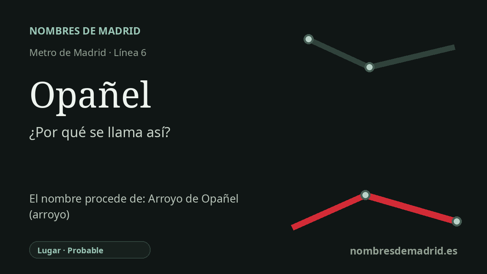

Publicado el · Investigación de Nombres de Madrid · Cómo verificamos cada origen · 10 fuentes consultadas
Respuesta rápida
Opañel toma su nombre del barrio de Carabanchel, no de su primera denominación en Metro, Elvas. El topónimo local más antiguo se asocia al Arroyo de Opañel, aunque su origen lingüístico profundo sigue siendo incierto.
La historia del nombre
La estación de Opañel lleva el nombre del barrio que la rodea en Carabanchel. No fue su primera denominación en Metro: cuando el tramo de la línea 6 por el sur de Madrid se abrió al público en mayo de 1981, esta parada figuraba como Elvas, por una calle próxima.
El cambio llegó pronto. La prensa de la época explicó que Elvas pasaría a llamarse Opañel porque, al variar el trazado primitivo de la línea, la calle Elvas había quedado apartada de la estación, mientras que Opañel identificaba mejor la zona. El cambio oficial entró en vigor a las 6:00 del 27 de junio de 1983, junto con los cambios de José Antonio a Gran Vía y de General Mola a Príncipe de Vergara.
Detrás del nombre de la estación hay un topónimo antiguo de Carabanchel. Opañel es hoy uno de los barrios oficiales del distrito, y el nombre también se conserva en la calle Arroyo de Opañel y en dotaciones municipales situadas allí. Esto apunta con fuerza a que el nombre del barrio quedó ligado al recuerdo del Arroyo de Opañel, aunque el curso de agua haya desaparecido casi por completo de la superficie urbana cotidiana.
Existe una explicación más profunda y sugerente: algunos topónimos e hidrónimos hispánicos se han comparado con una raíz prerromana indoeuropea up- o op- con sentido de agua o río. El estudio de Francisco Villar es real y pertinente para esa familia hidronímica amplia, pero no cita Opañel por su nombre. Para una lectura pública, esa propuesta debe presentarse como posibilidad lingüística, no como origen probado.
La historia mejor documentada de la estación es, por tanto, local y práctica: Metro sustituyó en 1983 un nombre viario poco preciso, Elvas, por el nombre del barrio, Opañel. La relación con el antiguo arroyo es probable y aporta contexto, mientras que la teoría hidronímica prehistórica queda pendiente de revisión especializada.